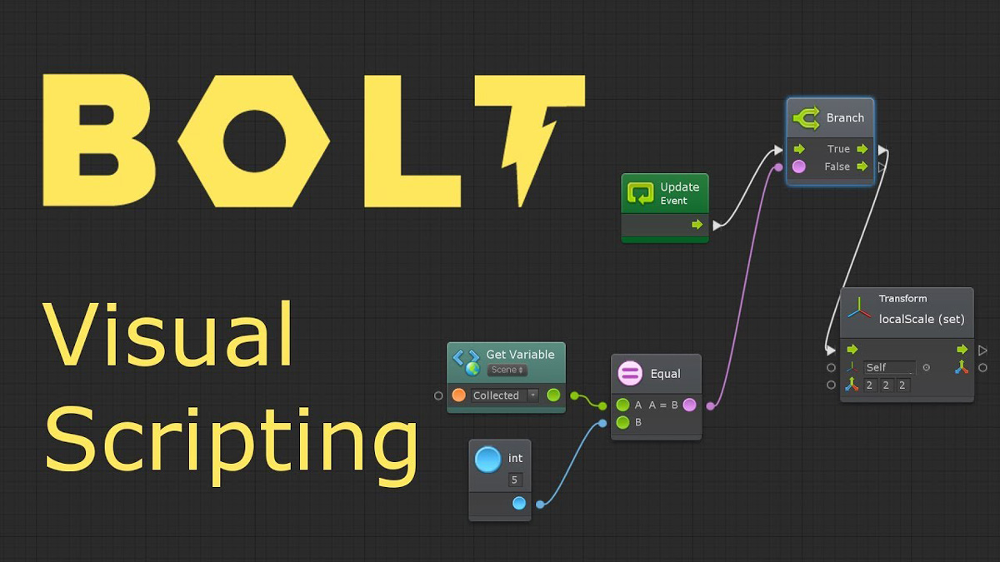
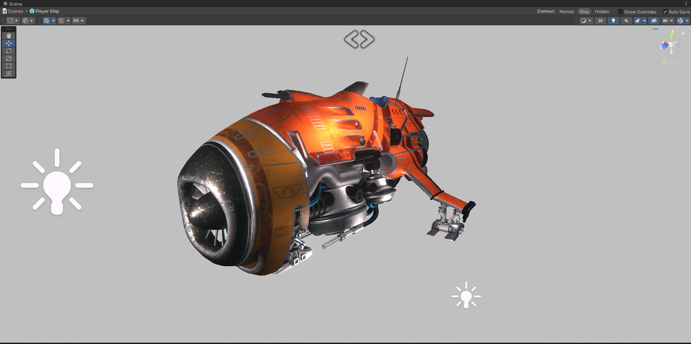
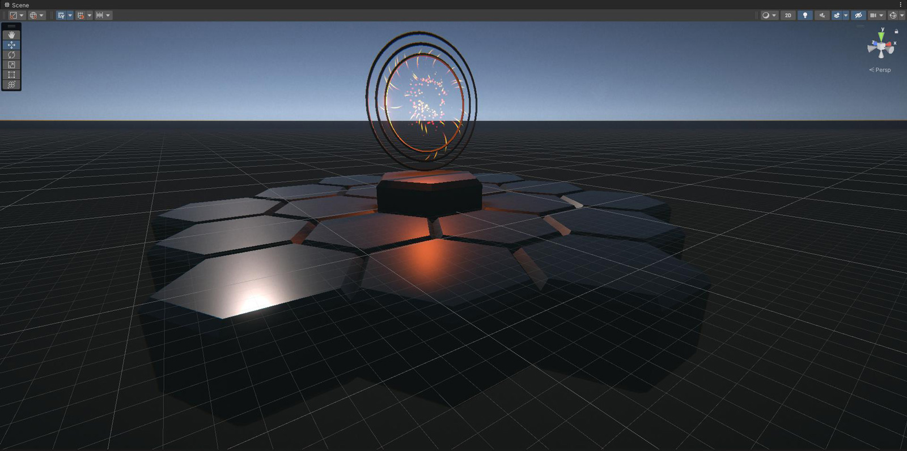
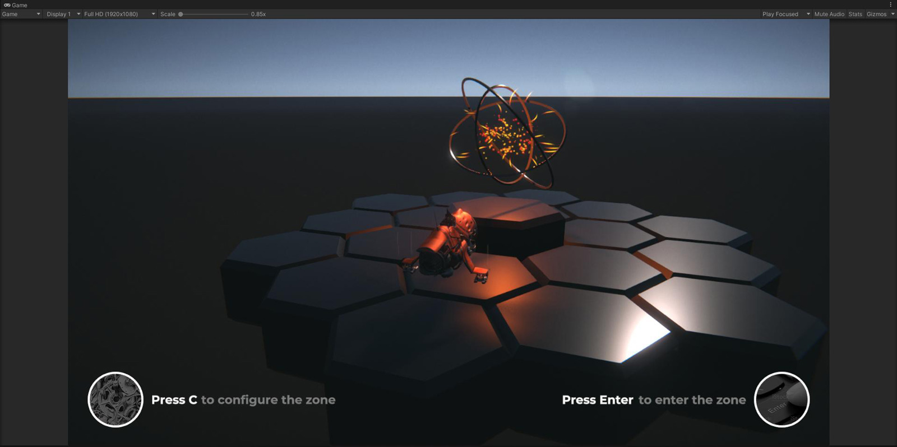
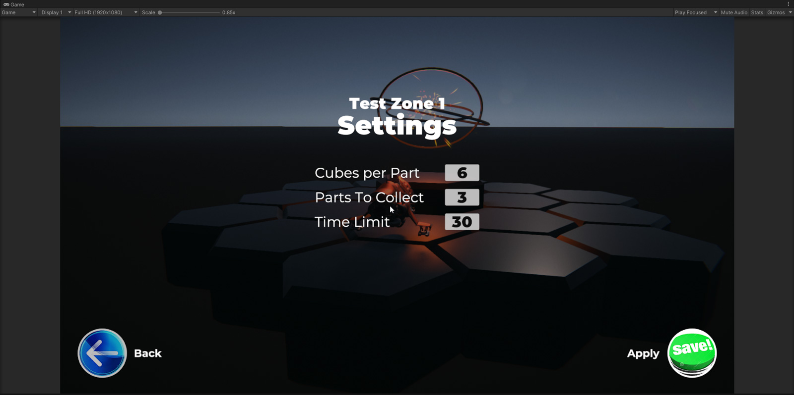
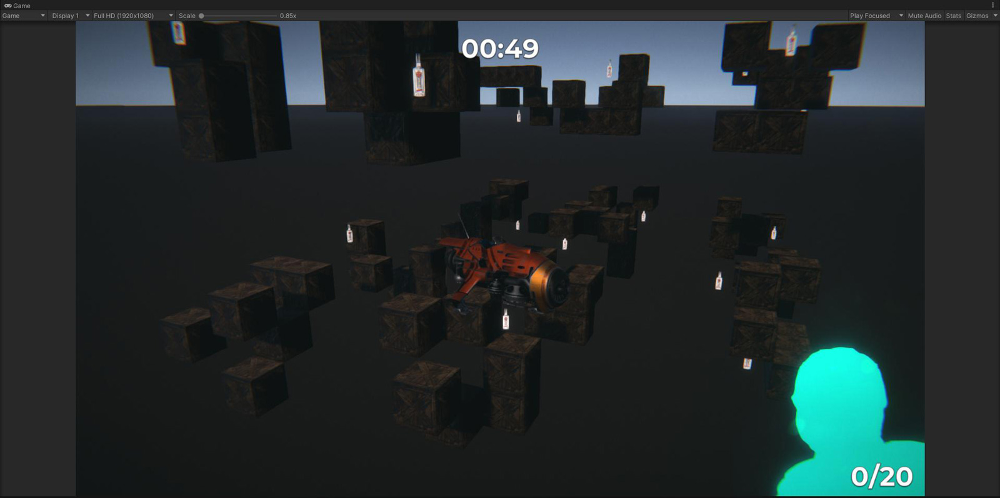
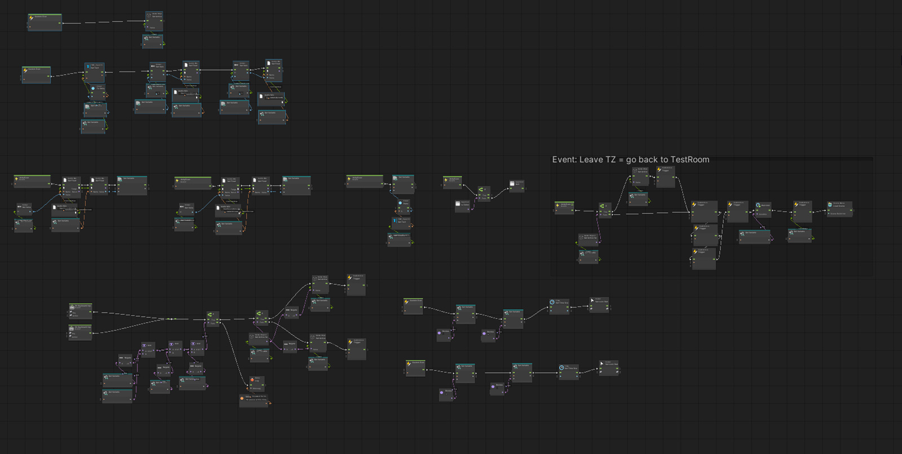

In the years 2018-2020 I played around with Unity a bit and came to the conclusion that there wasn't much to do without programming. After a while, I came across a Unity asset called Bolt. This asset allowed for creating behavior and more without code, simulating programming, but with certain limitations.

Anyway, sometime in 2021, I decided to try learning Bolt and create something like a game where you initially appear and see "islands" leading to different "test zones". In the "test zones" I planned to implement various mini-games using Bolt, of course. The idea captivated me for a while, and I started the process of implementing this concept.
It's important to note that I completely ignored visual design and focused specifically on functionality. I wanted objects to move, be animated in some way, and be interactable.
The idea
So, as a character object, I chose a flying apparatus that I had previously used for the "Flying torpedo."

The "islands" turned out like this (basically, just a simple teleport):

When approaching an island, music plays, and you can set up a “test zone".


Yeap, the UI and the island look fantastic :D But as I’ve mentioned, I ignored the visual design to save time and focus.
What did I do in the first “test zone"?
The idea was simple.
You need to collect objects within a limited amount of time. As you could see from the previous screenshot, in the settings you can specify the number of obstacle blocks, the number of objects to collect and the time limit.
And then you get to this:

The most challenging part for me was the random generation of objects, so that with the same settings, the objects would be placed differently each time you entered the "zone". It took me about 3-4 days to achieve that. But in the end, it turned out exactly as I had envisioned. I called this part of the functionality - "Scene Builder." And here's what it looked like in Bolt:
At this stage, the "zone" was ready. All that remained was to add the ability to fly in and out of it: losing, winning, or using the menu.
And collaboratively with Bolt I came up with this:

The next «zone»
In the next “test zone" I decided to create something similar to "Flappy Bird."
The concept was also straightforward.
Controls: "WASD" + "Space." You have to fly through openings in the "columns." The openings are always random, they decrease over time, the "columns" start moving, the distance between them decreases and the flying speed increases. The longer you stay, the better.
And that's how only the main game logic functionality looked in Bolt:
In the end, I implemented about 80-90% of this "room". Afterwards, my ambitions suddenly left me, and I didn't even connect this "zone" to the main scene.
What went wrong?
During the development process, I encountered many limitations in Bolt that don't exist in programming. I watched and studied a lot of materials on this topic, compared and thought that maybe I should delve into C# after all, as many said it was worth it. But at that time, Unity announced that they were planning to implement their own Visual Scripting. So, I decided to wait.
About a year or a year and a half later, it turned out that instead of developing their own Visual Scripting, Unity simply acquired Bolt. Moreover, they integrated an older version of Bolt, lacking a significant amount of functionality. The most frustrating thing was that Unity didn't actively further develop Bolt. Therefore, this path of development turned out to be a dead end for me.
Try ‘em out
You can download and test the results yourself.
Will definitely run on Windows and should also run on Mac and Linux.
There are 2 separate folders in the .zip archive: “TestRoom v0.1” and “TestZone2”. Just run the shortcuts ("Launch...") in the folders and you’re good to go.